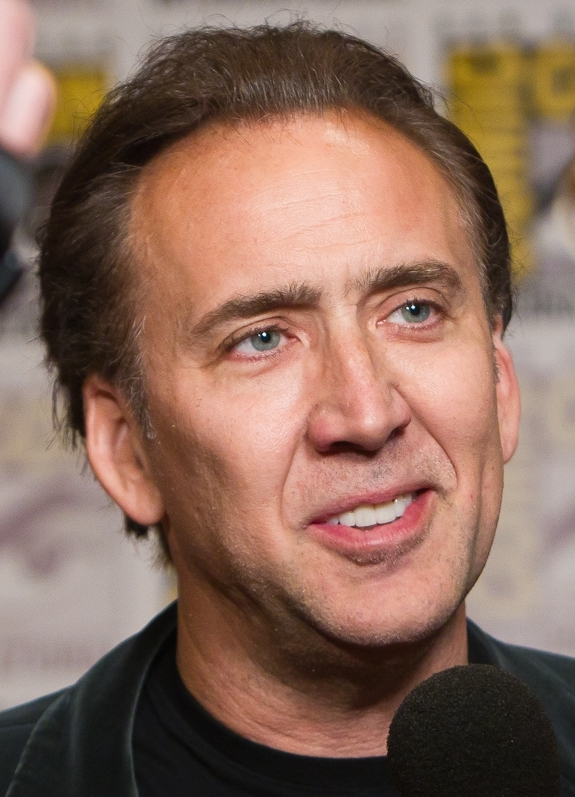

Nicolas Cage is a very well-known actor. There are some reasons why that is, those being because of the movies he is in, and the memes that have been made about him. This website will talk about those things, his early life, and his adult life. Nicolas Cage is most well known for the movies he has been in. Examples of these movies include National Treasure, The Croods, Ghost Rider, Conair, The Sorcerer’s Apprentice, and The Unbearable Weight of Massive Talent. Both National Treasure movies are very well put together and well known, the acting was very well done and has a very good story. The movie The Sorcerer’s Apprentice is another well-known movie for its good story and its humor. Another well-known movie is The Croods which is also known for its humor. In all these movies Nicholas was a good actor and was able to be humorous in the movies as well. His first acting gig was a television show in 1981and from that time till about 1988 he acted in quite a few movies and shows. Though during the time from around 1989 to 1994 his career was not doing well, and he was suffering. 1995 was when his career started to soar and he became more successful after the movies Kiss of Death and Leaving Las Vegas, because of his acting in the movie Leaving Las Vegas he received 2 awards. Those being the Academy Award for Best Actor and the Golden Globe award for Best Actor – Motion Picture Drama. From then to about 2003 he was very successful with his movies. In 2004 he started to become an even bigger star. He starred in movies such as National Treasure one and two which were very successful. He also starred in the movie Ghost Rider. By around 2012 he started to focus on a different type of movies ones that did not go to theaters. Though during this time, he was in a movie that was very successful, this movie is The Croods. Around this time, he was also in the Teen Titan GO! To the Movies film. Another movie he participated in was Spiderman: Into the Spider-Verse. In 2013 he starred in the movie Croods 2. He also acted in a movie named pig of which he received an award the Critic’s Choice Movie Award for Best Actor. In 2022 Nicolas Cage wrote a movie about himself that he also acted in.
